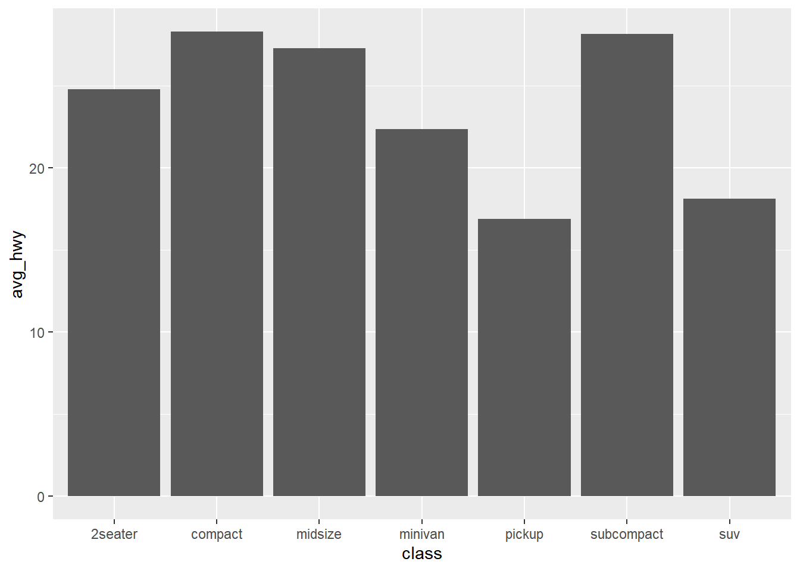
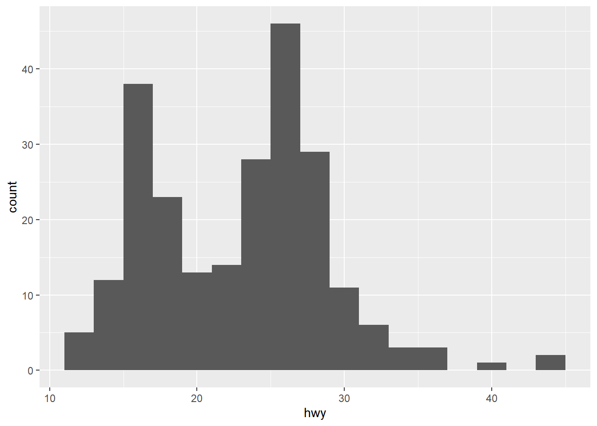
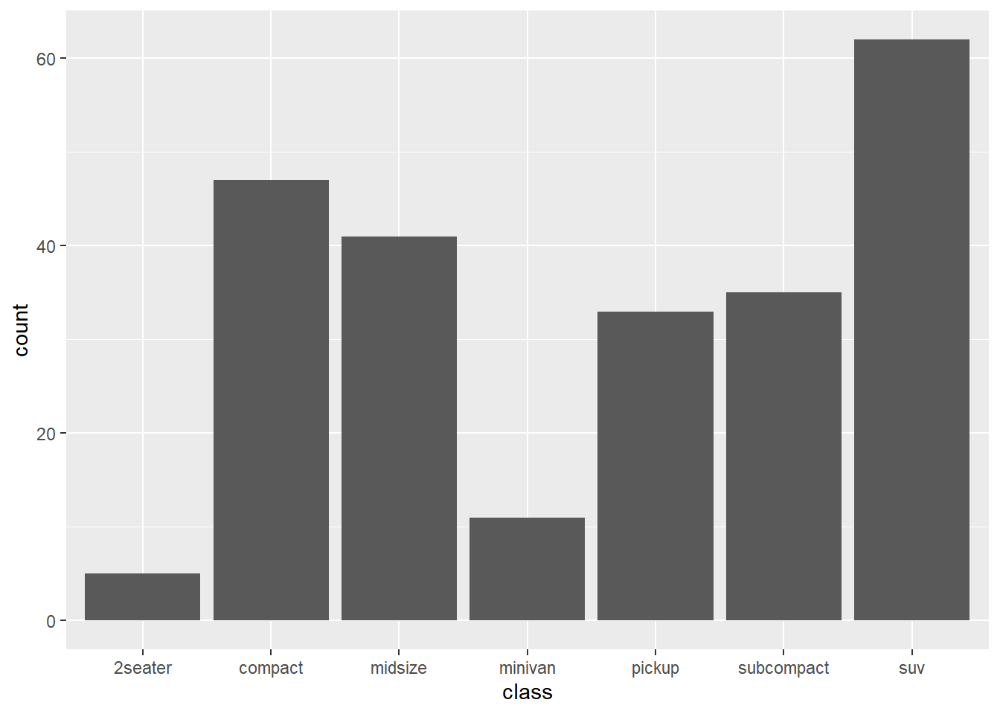
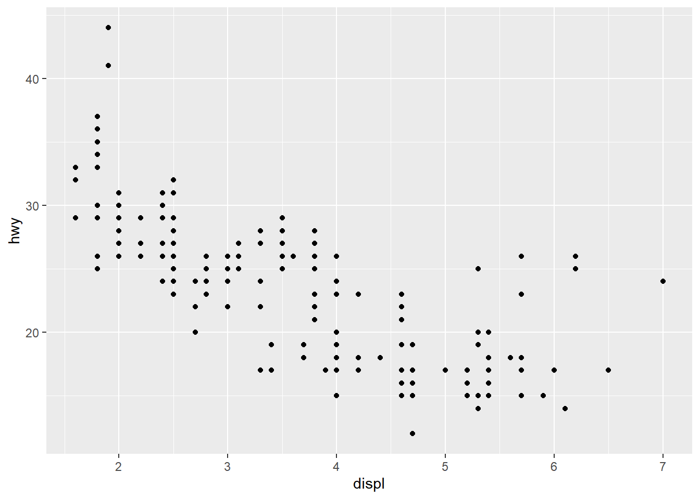
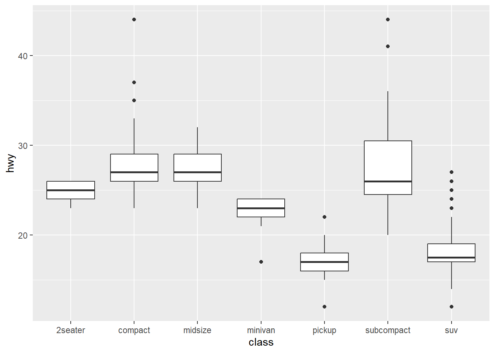
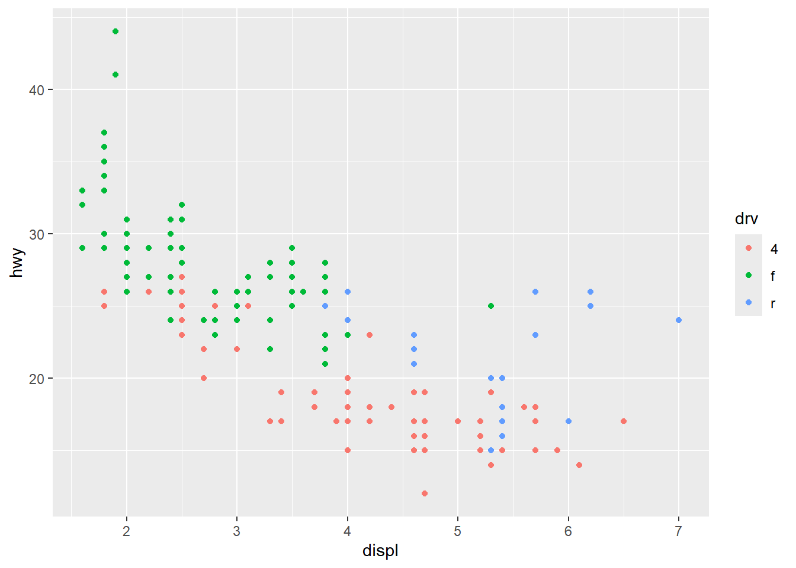
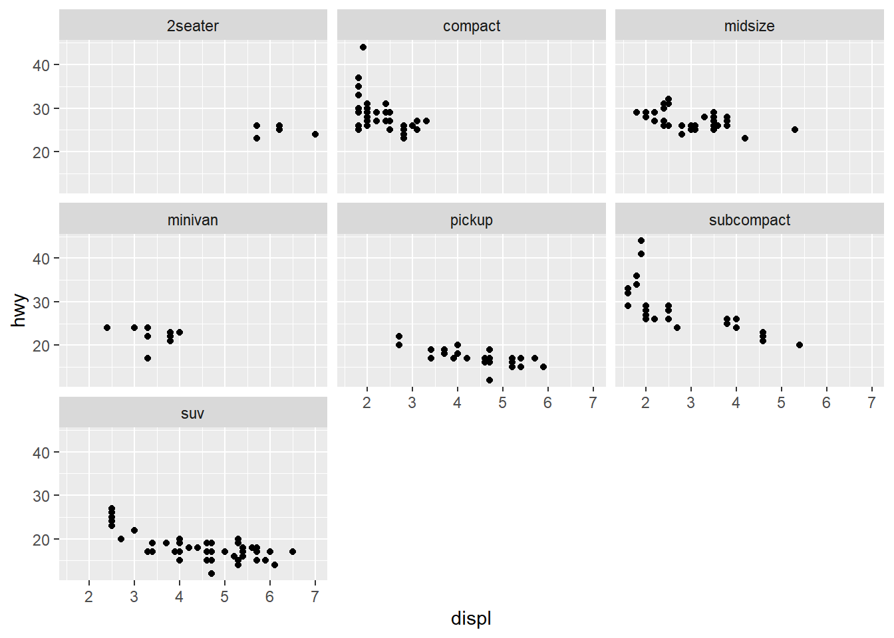
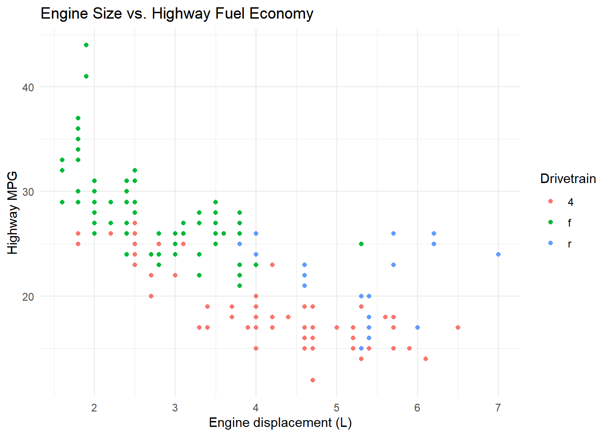
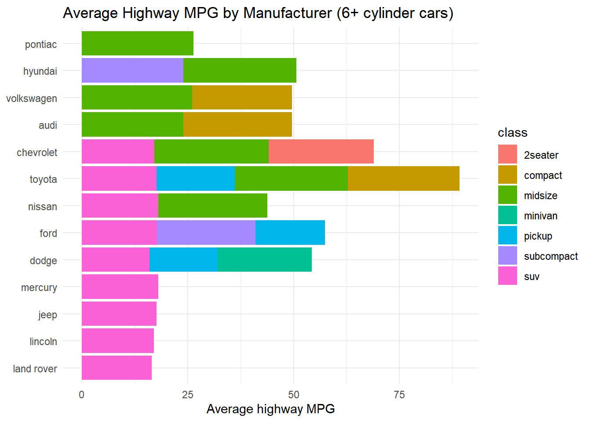

# install.packages(c("data.table", "ggplot2"))
library(data.table)
library(ggplot2)Data
Quick guide
We’ll use two packages throughout this lesson:
data.tablefor fast, concise data loading and processingggplot2for visualization
We’ll use the built-in mpg dataset (fuel economy data for 38 car models), converted to a data.table, so everyone can run this without needing an external file.
dt <- as.data.table(mpg)
Note
In a real project you’d typically load data with fread("yourfile.csv") instead of converting a built-in dataset. fread() is fast and auto-detects column types and delimiters. Saving out is just as easy: fwrite(dt, "output.csv").
1. Inspecting Data
Always look at your data before you touch it.
str(dt)Classes 'data.table' and 'data.frame': 234 obs. of 11 variables:
$ manufacturer: chr "audi" "audi" "audi" "audi" ...
$ model : chr "a4" "a4" "a4" "a4" ...
$ displ : num 1.8 1.8 2 2 2.8 2.8 3.1 1.8 1.8 2 ...
$ year : int 1999 1999 2008 2008 1999 1999 2008 1999 1999 2008 ...
$ cyl : int 4 4 4 4 6 6 6 4 4 4 ...
$ trans : chr "auto(l5)" "manual(m5)" "manual(m6)" "auto(av)" ...
$ drv : chr "f" "f" "f" "f" ...
$ cty : int 18 21 20 21 16 18 18 18 16 20 ...
$ hwy : int 29 29 31 30 26 26 27 26 25 28 ...
$ fl : chr "p" "p" "p" "p" ...
$ class : chr "compact" "compact" "compact" "compact" ...
- attr(*, ".internal.selfref")=<externalptr> summary(dt) manufacturer model displ year
Length:234 Length:234 Min. :1.600 Min. :1999
Class :character Class :character 1st Qu.:2.400 1st Qu.:1999
Mode :character Mode :character Median :3.300 Median :2004
Mean :3.472 Mean :2004
3rd Qu.:4.600 3rd Qu.:2008
Max. :7.000 Max. :2008
cyl trans drv cty
Min. :4.000 Length:234 Length:234 Min. : 9.00
1st Qu.:4.000 Class :character Class :character 1st Qu.:14.00
Median :6.000 Mode :character Mode :character Median :17.00
Mean :5.889 Mean :16.86
3rd Qu.:8.000 3rd Qu.:19.00
Max. :8.000 Max. :35.00
hwy fl class
Min. :12.00 Length:234 Length:234
1st Qu.:18.00 Class :character Class :character
Median :24.00 Mode :character Mode :character
Mean :23.44
3rd Qu.:27.00
Max. :44.00 dt manufacturer model displ year cyl trans drv cty hwy fl
<char> <char> <num> <int> <int> <char> <char> <int> <int> <char>
1: audi a4 1.8 1999 4 auto(l5) f 18 29 p
2: audi a4 1.8 1999 4 manual(m5) f 21 29 p
3: audi a4 2.0 2008 4 manual(m6) f 20 31 p
4: audi a4 2.0 2008 4 auto(av) f 21 30 p
5: audi a4 2.8 1999 6 auto(l5) f 16 26 p
---
230: volkswagen passat 2.0 2008 4 auto(s6) f 19 28 p
231: volkswagen passat 2.0 2008 4 manual(m6) f 21 29 p
232: volkswagen passat 2.8 1999 6 auto(l5) f 16 26 p
233: volkswagen passat 2.8 1999 6 manual(m5) f 18 26 p
234: volkswagen passat 3.6 2008 6 auto(s6) f 17 26 p
class
<char>
1: compact
2: compact
3: compact
4: compact
5: compact
---
230: midsize
231: midsize
232: midsize
233: midsize
234: midsizeUseful data.table-specific tools:
nrow(dt) # number of rows[1] 234dt[, .N] # data.table way of counting rows[1] 234names(dt) # column names [1] "manufacturer" "model" "displ" "year" "cyl"
[6] "trans" "drv" "cty" "hwy" "fl"
[11] "class" Exercise 1
- How many columns does
dthave? - What type is the
classcolumn (hint: usestr())?
2. Processing Data: DT[i, j, by]
data.table’s whole processing syntax is one bracket with three jobs:
DT[ i, j, by ]
| | |
filter select/ group by
rows computei — filtering rows
dt[cyl == 4] manufacturer model displ year cyl trans drv cty
<char> <char> <num> <int> <int> <char> <char> <int>
1: audi a4 1.8 1999 4 auto(l5) f 18
2: audi a4 1.8 1999 4 manual(m5) f 21
3: audi a4 2.0 2008 4 manual(m6) f 20
4: audi a4 2.0 2008 4 auto(av) f 21
5: audi a4 quattro 1.8 1999 4 manual(m5) 4 18
6: audi a4 quattro 1.8 1999 4 auto(l5) 4 16
7: audi a4 quattro 2.0 2008 4 manual(m6) 4 20
8: audi a4 quattro 2.0 2008 4 auto(s6) 4 19
9: chevrolet malibu 2.4 1999 4 auto(l4) f 19
10: chevrolet malibu 2.4 2008 4 auto(l4) f 22
11: dodge caravan 2wd 2.4 1999 4 auto(l3) f 18
12: honda civic 1.6 1999 4 manual(m5) f 28
13: honda civic 1.6 1999 4 auto(l4) f 24
14: honda civic 1.6 1999 4 manual(m5) f 25
15: honda civic 1.6 1999 4 manual(m5) f 23
16: honda civic 1.6 1999 4 auto(l4) f 24
17: honda civic 1.8 2008 4 manual(m5) f 26
18: honda civic 1.8 2008 4 auto(l5) f 25
19: honda civic 1.8 2008 4 auto(l5) f 24
20: honda civic 2.0 2008 4 manual(m6) f 21
21: hyundai sonata 2.4 1999 4 auto(l4) f 18
22: hyundai sonata 2.4 1999 4 manual(m5) f 18
23: hyundai sonata 2.4 2008 4 auto(l4) f 21
24: hyundai sonata 2.4 2008 4 manual(m5) f 21
25: hyundai tiburon 2.0 1999 4 auto(l4) f 19
26: hyundai tiburon 2.0 1999 4 manual(m5) f 19
27: hyundai tiburon 2.0 2008 4 manual(m5) f 20
28: hyundai tiburon 2.0 2008 4 auto(l4) f 20
29: nissan altima 2.4 1999 4 manual(m5) f 21
30: nissan altima 2.4 1999 4 auto(l4) f 19
31: nissan altima 2.5 2008 4 auto(av) f 23
32: nissan altima 2.5 2008 4 manual(m6) f 23
33: subaru forester awd 2.5 1999 4 manual(m5) 4 18
34: subaru forester awd 2.5 1999 4 auto(l4) 4 18
35: subaru forester awd 2.5 2008 4 manual(m5) 4 20
36: subaru forester awd 2.5 2008 4 manual(m5) 4 19
37: subaru forester awd 2.5 2008 4 auto(l4) 4 20
38: subaru forester awd 2.5 2008 4 auto(l4) 4 18
39: subaru impreza awd 2.2 1999 4 auto(l4) 4 21
40: subaru impreza awd 2.2 1999 4 manual(m5) 4 19
41: subaru impreza awd 2.5 1999 4 manual(m5) 4 19
42: subaru impreza awd 2.5 1999 4 auto(l4) 4 19
43: subaru impreza awd 2.5 2008 4 auto(s4) 4 20
44: subaru impreza awd 2.5 2008 4 auto(s4) 4 20
45: subaru impreza awd 2.5 2008 4 manual(m5) 4 19
46: subaru impreza awd 2.5 2008 4 manual(m5) 4 20
47: toyota 4runner 4wd 2.7 1999 4 manual(m5) 4 15
48: toyota 4runner 4wd 2.7 1999 4 auto(l4) 4 16
49: toyota camry 2.2 1999 4 manual(m5) f 21
50: toyota camry 2.2 1999 4 auto(l4) f 21
51: toyota camry 2.4 2008 4 manual(m5) f 21
52: toyota camry 2.4 2008 4 auto(l5) f 21
53: toyota camry solara 2.2 1999 4 auto(l4) f 21
54: toyota camry solara 2.2 1999 4 manual(m5) f 21
55: toyota camry solara 2.4 2008 4 manual(m5) f 21
56: toyota camry solara 2.4 2008 4 auto(s5) f 22
57: toyota corolla 1.8 1999 4 auto(l3) f 24
58: toyota corolla 1.8 1999 4 auto(l4) f 24
59: toyota corolla 1.8 1999 4 manual(m5) f 26
60: toyota corolla 1.8 2008 4 manual(m5) f 28
61: toyota corolla 1.8 2008 4 auto(l4) f 26
62: toyota toyota tacoma 4wd 2.7 1999 4 manual(m5) 4 15
63: toyota toyota tacoma 4wd 2.7 1999 4 auto(l4) 4 16
64: toyota toyota tacoma 4wd 2.7 2008 4 manual(m5) 4 17
65: volkswagen gti 2.0 1999 4 manual(m5) f 21
66: volkswagen gti 2.0 1999 4 auto(l4) f 19
67: volkswagen gti 2.0 2008 4 manual(m6) f 21
68: volkswagen gti 2.0 2008 4 auto(s6) f 22
69: volkswagen jetta 1.9 1999 4 manual(m5) f 33
70: volkswagen jetta 2.0 1999 4 manual(m5) f 21
71: volkswagen jetta 2.0 1999 4 auto(l4) f 19
72: volkswagen jetta 2.0 2008 4 auto(s6) f 22
73: volkswagen jetta 2.0 2008 4 manual(m6) f 21
74: volkswagen new beetle 1.9 1999 4 manual(m5) f 35
75: volkswagen new beetle 1.9 1999 4 auto(l4) f 29
76: volkswagen new beetle 2.0 1999 4 manual(m5) f 21
77: volkswagen new beetle 2.0 1999 4 auto(l4) f 19
78: volkswagen passat 1.8 1999 4 manual(m5) f 21
79: volkswagen passat 1.8 1999 4 auto(l5) f 18
80: volkswagen passat 2.0 2008 4 auto(s6) f 19
81: volkswagen passat 2.0 2008 4 manual(m6) f 21
manufacturer model displ year cyl trans drv cty
<char> <char> <num> <int> <int> <char> <char> <int>
hwy fl class
<int> <char> <char>
1: 29 p compact
2: 29 p compact
3: 31 p compact
4: 30 p compact
5: 26 p compact
6: 25 p compact
7: 28 p compact
8: 27 p compact
9: 27 r midsize
10: 30 r midsize
11: 24 r minivan
12: 33 r subcompact
13: 32 r subcompact
14: 32 r subcompact
15: 29 p subcompact
16: 32 r subcompact
17: 34 r subcompact
18: 36 r subcompact
19: 36 c subcompact
20: 29 p subcompact
21: 26 r midsize
22: 27 r midsize
23: 30 r midsize
24: 31 r midsize
25: 26 r subcompact
26: 29 r subcompact
27: 28 r subcompact
28: 27 r subcompact
29: 29 r compact
30: 27 r compact
31: 31 r midsize
32: 32 r midsize
33: 25 r suv
34: 24 r suv
35: 27 r suv
36: 25 p suv
37: 26 r suv
38: 23 p suv
39: 26 r subcompact
40: 26 r subcompact
41: 26 r subcompact
42: 26 r subcompact
43: 25 p compact
44: 27 r compact
45: 25 p compact
46: 27 r compact
47: 20 r suv
48: 20 r suv
49: 29 r midsize
50: 27 r midsize
51: 31 r midsize
52: 31 r midsize
53: 27 r compact
54: 29 r compact
55: 31 r compact
56: 31 r compact
57: 30 r compact
58: 33 r compact
59: 35 r compact
60: 37 r compact
61: 35 r compact
62: 20 r pickup
63: 20 r pickup
64: 22 r pickup
65: 29 r compact
66: 26 r compact
67: 29 p compact
68: 29 p compact
69: 44 d compact
70: 29 r compact
71: 26 r compact
72: 29 p compact
73: 29 p compact
74: 44 d subcompact
75: 41 d subcompact
76: 29 r subcompact
77: 26 r subcompact
78: 29 p midsize
79: 29 p midsize
80: 28 p midsize
81: 29 p midsize
hwy fl class
<int> <char> <char>dt[hwy > 30] manufacturer model displ year cyl trans drv cty hwy
<char> <char> <num> <int> <int> <char> <char> <int> <int>
1: audi a4 2.0 2008 4 manual(m6) f 20 31
2: honda civic 1.6 1999 4 manual(m5) f 28 33
3: honda civic 1.6 1999 4 auto(l4) f 24 32
4: honda civic 1.6 1999 4 manual(m5) f 25 32
5: honda civic 1.6 1999 4 auto(l4) f 24 32
6: honda civic 1.8 2008 4 manual(m5) f 26 34
7: honda civic 1.8 2008 4 auto(l5) f 25 36
8: honda civic 1.8 2008 4 auto(l5) f 24 36
9: hyundai sonata 2.4 2008 4 manual(m5) f 21 31
10: nissan altima 2.5 2008 4 auto(av) f 23 31
11: nissan altima 2.5 2008 4 manual(m6) f 23 32
12: toyota camry 2.4 2008 4 manual(m5) f 21 31
13: toyota camry 2.4 2008 4 auto(l5) f 21 31
14: toyota camry solara 2.4 2008 4 manual(m5) f 21 31
15: toyota camry solara 2.4 2008 4 auto(s5) f 22 31
16: toyota corolla 1.8 1999 4 auto(l4) f 24 33
17: toyota corolla 1.8 1999 4 manual(m5) f 26 35
18: toyota corolla 1.8 2008 4 manual(m5) f 28 37
19: toyota corolla 1.8 2008 4 auto(l4) f 26 35
20: volkswagen jetta 1.9 1999 4 manual(m5) f 33 44
21: volkswagen new beetle 1.9 1999 4 manual(m5) f 35 44
22: volkswagen new beetle 1.9 1999 4 auto(l4) f 29 41
manufacturer model displ year cyl trans drv cty hwy
<char> <char> <num> <int> <int> <char> <char> <int> <int>
fl class
<char> <char>
1: p compact
2: r subcompact
3: r subcompact
4: r subcompact
5: r subcompact
6: r subcompact
7: r subcompact
8: c subcompact
9: r midsize
10: r midsize
11: r midsize
12: r midsize
13: r midsize
14: r compact
15: r compact
16: r compact
17: r compact
18: r compact
19: r compact
20: d compact
21: d subcompact
22: d subcompact
fl class
<char> <char>j — selecting and computing columns
# select columns
dt[, .(manufacturer, model, hwy)] manufacturer model hwy
<char> <char> <int>
1: audi a4 29
2: audi a4 29
3: audi a4 31
4: audi a4 30
5: audi a4 26
---
230: volkswagen passat 28
231: volkswagen passat 29
232: volkswagen passat 26
233: volkswagen passat 26
234: volkswagen passat 26# compute a new column with :=
dt[, mpg_avg := (cty + hwy) / 2]
dtIndex: <cyl>
manufacturer model displ year cyl trans drv cty hwy fl
<char> <char> <num> <int> <int> <char> <char> <int> <int> <char>
1: audi a4 1.8 1999 4 auto(l5) f 18 29 p
2: audi a4 1.8 1999 4 manual(m5) f 21 29 p
3: audi a4 2.0 2008 4 manual(m6) f 20 31 p
4: audi a4 2.0 2008 4 auto(av) f 21 30 p
5: audi a4 2.8 1999 6 auto(l5) f 16 26 p
---
230: volkswagen passat 2.0 2008 4 auto(s6) f 19 28 p
231: volkswagen passat 2.0 2008 4 manual(m6) f 21 29 p
232: volkswagen passat 2.8 1999 6 auto(l5) f 16 26 p
233: volkswagen passat 2.8 1999 6 manual(m5) f 18 26 p
234: volkswagen passat 3.6 2008 6 auto(s6) f 17 26 p
class mpg_avg
<char> <num>
1: compact 23.5
2: compact 25.0
3: compact 25.5
4: compact 25.5
5: compact 21.0
---
230: midsize 23.5
231: midsize 25.0
232: midsize 21.0
233: midsize 22.0
234: midsize 21.5
Note
:= modifies dt in place — no copy is made, no reassignment needed. This is different from dplyr’s mutate(), which returns a new object.
i + j together
dt[cyl == 4, .(manufacturer, model, mpg_avg)] manufacturer model mpg_avg
<char> <char> <num>
1: audi a4 23.5
2: audi a4 25.0
3: audi a4 25.5
4: audi a4 25.5
5: audi a4 quattro 22.0
6: audi a4 quattro 20.5
7: audi a4 quattro 24.0
8: audi a4 quattro 23.0
9: chevrolet malibu 23.0
10: chevrolet malibu 26.0
11: dodge caravan 2wd 21.0
12: honda civic 30.5
13: honda civic 28.0
14: honda civic 28.5
15: honda civic 26.0
16: honda civic 28.0
17: honda civic 30.0
18: honda civic 30.5
19: honda civic 30.0
20: honda civic 25.0
21: hyundai sonata 22.0
22: hyundai sonata 22.5
23: hyundai sonata 25.5
24: hyundai sonata 26.0
25: hyundai tiburon 22.5
26: hyundai tiburon 24.0
27: hyundai tiburon 24.0
28: hyundai tiburon 23.5
29: nissan altima 25.0
30: nissan altima 23.0
31: nissan altima 27.0
32: nissan altima 27.5
33: subaru forester awd 21.5
34: subaru forester awd 21.0
35: subaru forester awd 23.5
36: subaru forester awd 22.0
37: subaru forester awd 23.0
38: subaru forester awd 20.5
39: subaru impreza awd 23.5
40: subaru impreza awd 22.5
41: subaru impreza awd 22.5
42: subaru impreza awd 22.5
43: subaru impreza awd 22.5
44: subaru impreza awd 23.5
45: subaru impreza awd 22.0
46: subaru impreza awd 23.5
47: toyota 4runner 4wd 17.5
48: toyota 4runner 4wd 18.0
49: toyota camry 25.0
50: toyota camry 24.0
51: toyota camry 26.0
52: toyota camry 26.0
53: toyota camry solara 24.0
54: toyota camry solara 25.0
55: toyota camry solara 26.0
56: toyota camry solara 26.5
57: toyota corolla 27.0
58: toyota corolla 28.5
59: toyota corolla 30.5
60: toyota corolla 32.5
61: toyota corolla 30.5
62: toyota toyota tacoma 4wd 17.5
63: toyota toyota tacoma 4wd 18.0
64: toyota toyota tacoma 4wd 19.5
65: volkswagen gti 25.0
66: volkswagen gti 22.5
67: volkswagen gti 25.0
68: volkswagen gti 25.5
69: volkswagen jetta 38.5
70: volkswagen jetta 25.0
71: volkswagen jetta 22.5
72: volkswagen jetta 25.5
73: volkswagen jetta 25.0
74: volkswagen new beetle 39.5
75: volkswagen new beetle 35.0
76: volkswagen new beetle 25.0
77: volkswagen new beetle 22.5
78: volkswagen passat 25.0
79: volkswagen passat 23.5
80: volkswagen passat 23.5
81: volkswagen passat 25.0
manufacturer model mpg_avg
<char> <char> <num>by — grouping
dt[, .(avg_hwy = mean(hwy)), by = class] class avg_hwy
<char> <num>
1: compact 28.29787
2: midsize 27.29268
3: suv 18.12903
4: 2seater 24.80000
5: minivan 22.36364
6: pickup 16.87879
7: subcompact 28.14286Putting it all together
dt[cyl >= 6, .(avg_hwy = mean(hwy), n = .N), by = manufacturer] manufacturer avg_hwy n
<char> <num> <int>
1: audi 25.10000 10
2: chevrolet 21.11765 17
3: dodge 17.77778 36
4: ford 19.36000 25
5: hyundai 25.33333 6
6: jeep 17.62500 8
7: land rover 16.50000 4
8: lincoln 17.00000 3
9: mercury 18.00000 4
10: nissan 22.33333 9
11: pontiac 26.40000 5
12: toyota 21.18750 16
13: volkswagen 24.83333 6Chaining
You can chain multiple [...] operations to build a pipeline:
dt[cyl >= 6][, .(avg_hwy = mean(hwy)), by = manufacturer][order(-avg_hwy)] manufacturer avg_hwy
<char> <num>
1: pontiac 26.40000
2: hyundai 25.33333
3: audi 25.10000
4: volkswagen 24.83333
5: nissan 22.33333
6: toyota 21.18750
7: chevrolet 21.11765
8: ford 19.36000
9: mercury 18.00000
10: dodge 17.77778
11: jeep 17.62500
12: lincoln 17.00000
13: land rover 16.50000Exercise 2
- Filter to cars with
drv == "4"(four-wheel drive) and find the averagectymileage byclass. - Create a new column
efficientthat isTRUEwhenhwy > 25.
3. Making Graphs with ggplot2
Every ggplot2 plot follows the same recipe: data + aes() + geom_*().
data.table objects work directly with ggplot() — no conversion needed. A common and idiomatic pattern is to do the processing inside the data.table brackets, and pass the result straight into ggplot():
ggplot(dt[, .(avg_hwy = mean(hwy)), by = class],
aes(x = class, y = avg_hwy)) +
geom_col()
One variable
ggplot(dt, aes(x = hwy)) +
geom_histogram(binwidth = 2)
ggplot(dt, aes(x = class)) +
geom_bar()
Two variables
ggplot(dt, aes(x = displ, y = hwy)) +
geom_point()
ggplot(dt, aes(x = class, y = hwy)) +
geom_boxplot()
Grouping and faceting
ggplot(dt, aes(x = displ, y = hwy, color = drv)) +
geom_point()
ggplot(dt, aes(x = displ, y = hwy)) +
geom_point() +
facet_wrap(~ class)
Polish: labels and themes
ggplot(dt, aes(x = displ, y = hwy, color = drv)) +
geom_point() +
labs(
title = "Engine Size vs. Highway Fuel Economy",
x = "Engine displacement (L)",
y = "Highway MPG",
color = "Drivetrain"
) +
theme_minimal()
Exercise 3
- Make a boxplot of
ctymileage bydrv. - Facet the scatterplot of
displvs.hwybyyearinstead ofclass. - Add a title and axis labels to one of your plots from Exercise 2’s results.
Full pipeline example
Putting load → process → plot together in one chain:
ggplot(
dt[cyl >= 6, .(avg_hwy = mean(hwy)), by = .(manufacturer, class)],
aes(x = reorder(manufacturer, avg_hwy), y = avg_hwy, fill = class)
) +
geom_col() +
coord_flip() +
labs(
title = "Average Highway MPG by Manufacturer (6+ cylinder cars)",
x = NULL,
y = "Average highway MPG"
) +
theme_minimal()
Summary
| Stage | Tool |
|---|---|
| Load | fread() |
| Process | DT[i, j, by] |
| Plot | ggplot() + geom_*() |